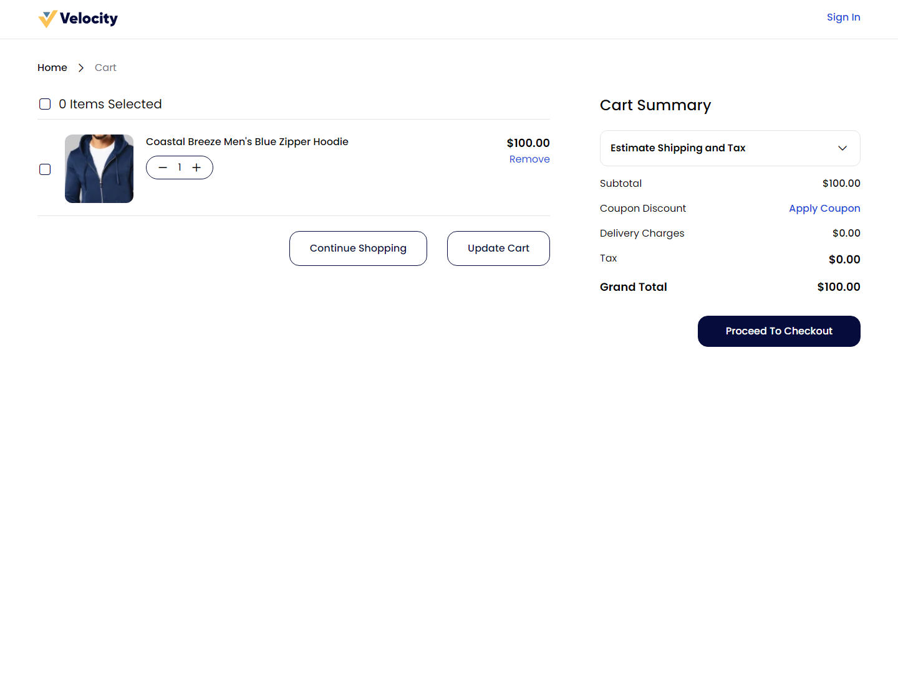
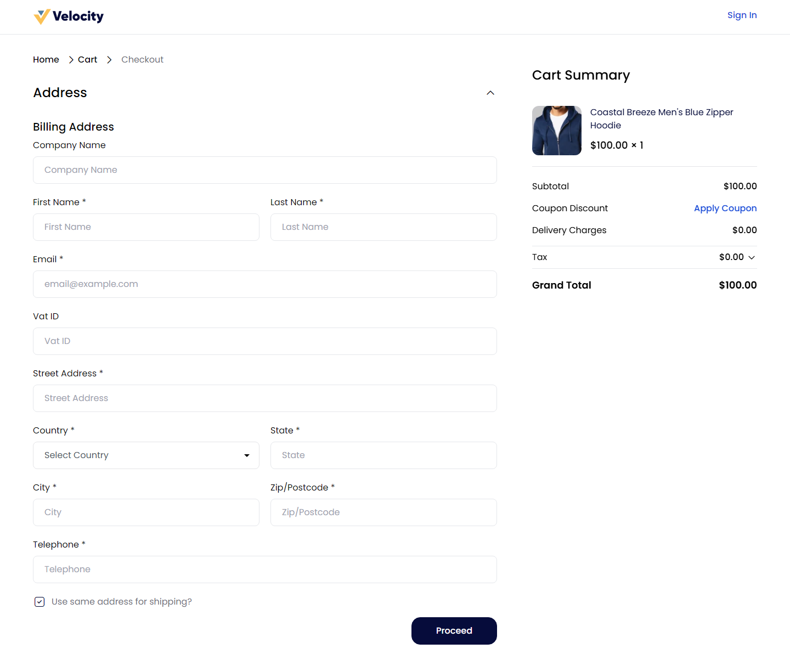
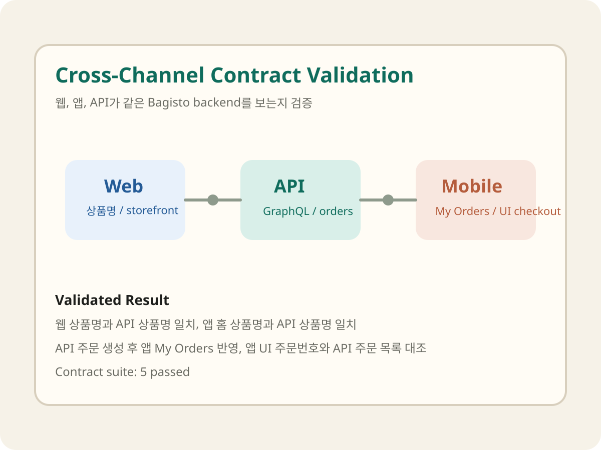
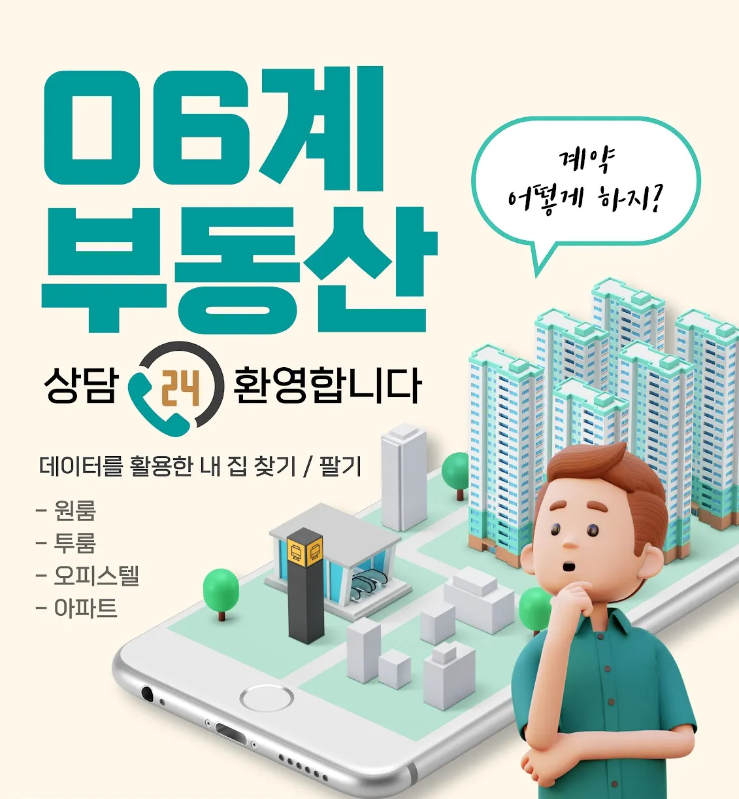

홈 진입 후 Featured Products가 정상적으로 노출됨 PASS
수동 테스트로 검증한 핵심 사용자 흐름을 Playwright로 자동화했습니다. UI 입출력만으로 동작을 검증하는 블랙박스 원칙을 유지하면서, 배포 이후 반복적으로 실행할 수 있는 회귀 테스트를 구성했습니다. 시나리오는 홈 → 상품 상세 → 장바구니 → 체크아웃 진입으로 이어지는 핵심 구매 흐름을 기준으로 선정했습니다.
홈 진입 후 Featured Products가 정상적으로 노출됨 PASS

상품 상세 페이지 진입 및 주요 정보 렌더링 확인 PASS

장바구니에서 상품명·수량·금액·Checkout 버튼 확인 PASS

체크아웃 진입 후 주소 입력 단계 노출 확인 PASS
UI를 거치지 않고 GraphQL API를 직접 검증해 백엔드 품질을 독립적으로 점검했습니다. 또한 Web·App·API 세 채널이 동일한 데이터를 반환하는지 계약 테스트로 교차 확인해, 채널 간 데이터 불일치를 사전에 탐지할 수 있도록 구성했습니다.



